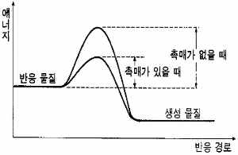

해설 2
2-1 단계 1 예시답안
과산화 수소는 분해하여 물분자와 산소기체로 분리되므로 다음과 같이 기술할 수 있다.
\[2\,\text{H}_2\text{O}_2\,(aq) \rightleftharpoons 2\,\text{H}_2\text{O}\,(g) + \text{O}_2\,(g)\]
(반응물, 생성물의 화학식을 제대로 기술했을 경우 +15점; 화학반응식을 완결하였을 경우 +15점).
2-2 단계 2 예시답안
1몰의 과산화 수소가 분해하면 0.5몰의 산소 기체가 발생한다. \(0°\text{C}\) 1기압 조건에서 기체 1몰의 부피는 22.4 L 이므로 생성되는 산소 기체의 부피는 11.2 L 가 된다. (+20점)
이산화 망가니즈는 촉매로써 과산화 수소의 분해 반응속도를 증가시킬 뿐 생성물인 수소 기체의 양에는 전혀 영향을 미치지 않는다. (+10점)
2-3 단계 3 예시답안
촉매는 반응물과 생성물 사이의 활성화 에너지를 낮춤으로서 반응의 속도를 증가시킬 수 있다. (+20점)

촉매의 예로는 (1) 질소와 수소를 반응시켜 암모니아를 생성하는 하버의 합성법에서 금속 촉매를 이용하고 고온 저압의 조건에서 반응을 진행시켜 반응속도를 증가시키는 예나 (2) 생체 내의 화학반응에서 특정한 기질과 결합하여 반응을 일으키는 아밀레이스 등의 효소 등을 들 수 있다. (하나의 예를 들어 설명하면 +20점)